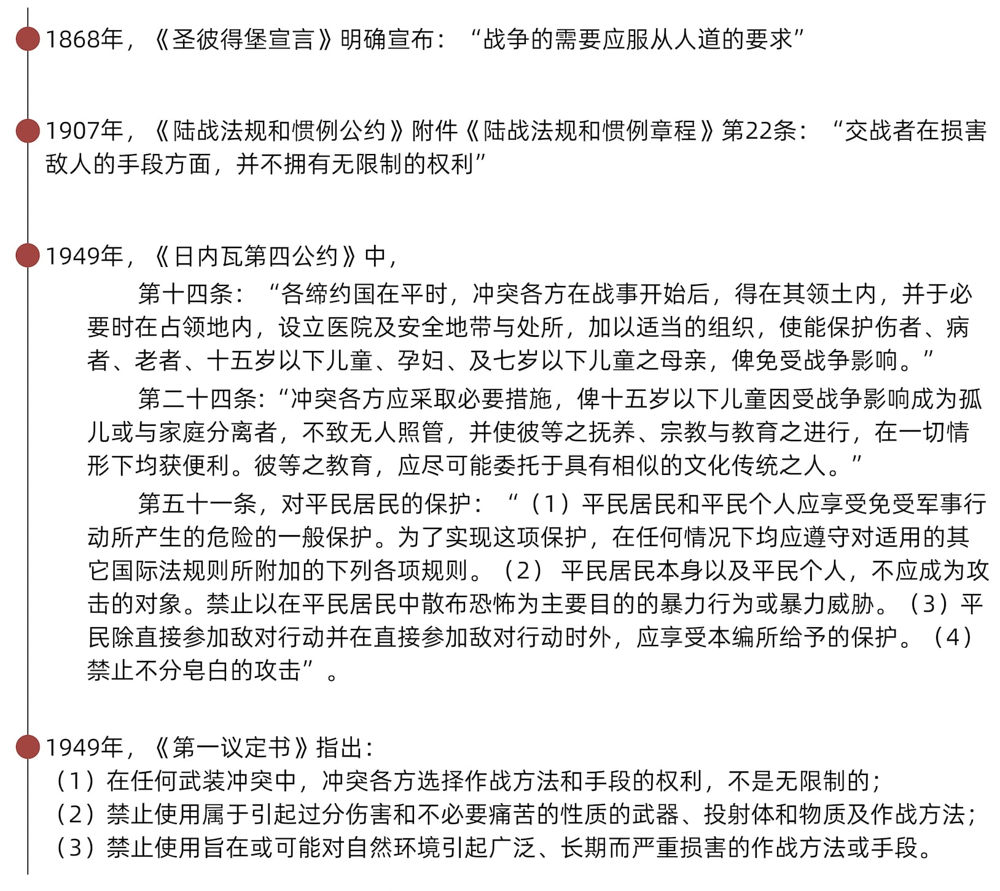

后911时代美国的战争时间表
战争死亡统计图
阿富汗平民伤亡情况
数据来源：中国人权研究会：《美国对外侵略战争造成严重人道主义灾难》
叙利亚平民伤亡情况
数据来源：中国人权研究会：《美国对外侵略战争造成严重人道主义灾难》
伊拉克平民伤亡情况
数据来源：中国人权研究会：《美国对外侵略战争造成严重人道主义灾难》
数据来源：中国社会科学院西亚非洲研究所 -《叙利亚难民危机及其影响》
难民迁徙图
数据来源：Brown University 《Costs of War》- UPDATE: Creating Refugees: Displacement Caused by the United States’ Post-9/11 Wars

数据来源：China Military：US is to blame for unstable Middle East
数据来源：数据来源： Brown University 《Costs of War》- The U.S. Budgetary Costs of the Post-9/11 Wars
8万亿美元价值比较
温室气体排放逐年累计图

数据来源：Brown University ：《Costs of War》- PENTAGON FUEL USE, CLIMATE CHANGE, AND THE COSTS OF WAR
数据来源：Brown University ：《Costs of War》- PENTAGON FUEL USE, CLIMATE CHANGE, AND THE COSTS OF WAR


数据来源：
中国社会科学院西亚非洲研究所 -《叙利亚难民危机及其影响》
联合国难民署联合国难民署 - https://www.unhcr.org/refugee-statistics/download/?url=QxX6Ls
联合国难民署 - Turn the Tide: Refugee Education in Crisis
中国人权研究会：《美国对外侵略战争造成严重人道主义灾难》
China Military：US is to blame for unstable Middle East
Allen, Michael A., Michael E. Flynn, and Carla Martinez Machain. 2021. “Global U.S. military deployment data: 1950-2020.” Conflict Management and Peace Science. TBD.
Michael A. Allen, Michael E. Flynn, and Carla Martinez Machain. 2020. “Outside the wire: US military deployments and public opinion in host states.” American Political Science Review. 114(2): 326-341.
U. S. Energy Information Administration：https://www.eia.gov/totalenergy/data/browser/index.php?tbl=T02.07#/?f=A&start=1975&end=2020&charted=13-1
Fondation BNP Paribas：《Global Carbon Atlas 2021》http://www.globalcarbonatlas.org/en/CO2-emissions
Brown University ：《Costs of War》- The 2001 Authorization for Use of Military Force: A Comprehensive Look at Where and How it Has Been Used
Brown University ：《Costs of War》- The U.S. Budgetary Costs of the Post-9/11 Wars
Brown University ：《Costs of War》- Human Cost of Post-9/11 Wars: Direct War Deaths in Major War Zones
Brown University ：《Costs of War》- UPDATE: Creating Refugees: Displacement Caused by the United States’ Post-9/11 Wars
Brown University ：《Costs of War》- PENTAGON FUEL USE, CLIMATE CHANGE, AND THE COSTS OF WAR
Brown University ：《Costs of War》- US Counterterrorism Operations 2018-2020
STOCKHOLM INTERNATIONAL PEACE RESEARCH INSTITUTE：《Trends in World Military Expenditure, 2021》
Brown University 《Costs of War》- The 2001 Authorization for Use of Military Force: A Comprehensive Look at Where and How it Has Been Used
《日内瓦（四）公约》
《1949年8月12日日内瓦四公约关于保护国际性武装冲突受难者的附加议定书》
《圣彼得堡宣言》
《陆战法规和惯例公约》
制作团队：郑沭贤 郑启航 殷欣
指导教师：赵甜芳
2022 © 暨南大学新闻传播学院